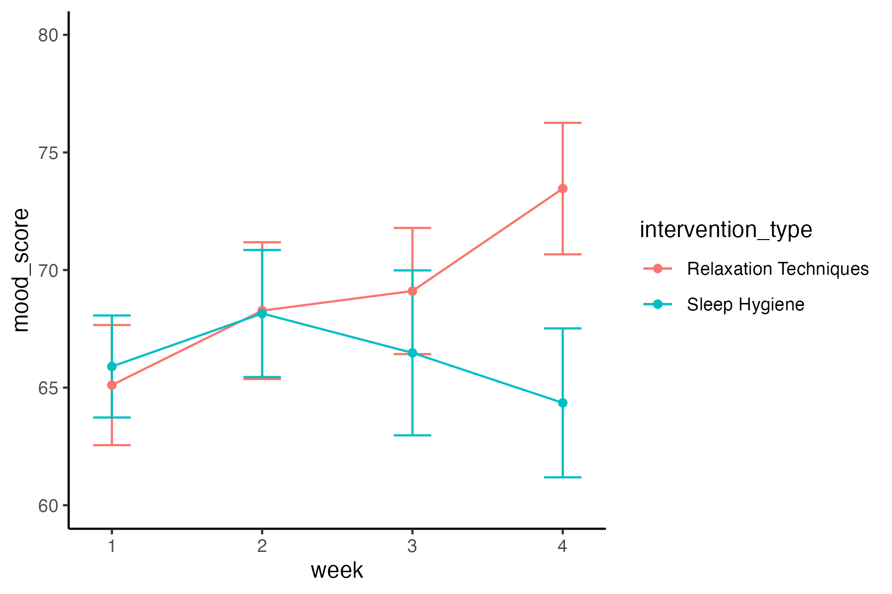

mutate(week = parse_number(week))
# e.g., you can pipe the result of pivot_longer() to this mutate() code
data_long <- data |>
pivot_longer() |>
mutate(week = parse_number(week))Class 2 Learning Activity
Let’s consider a study investigating the impact of sleep quality interventions on cognitive performance and mood across several weeks. In this scenario, participants are exposed to two interventions (Sleep Hygiene Education and Relaxation Techniques) and their cognitive performance scores and mood ratings are recorded weekly.
You’re analyzing data from a psychology experiment where participants’ cognitive performance scores and mood ratings are recorded across four weeks for two interventions. The data is split into two files, one with the cognitive performance data (⬇️ class_2_cog_data.csv) and another with the mood ratings data (⬇️ class_2_mood_data.txt), but the same participants across each data set.
Your task will be to import, restructure, and merge the data so that we can graphically visualize the results of the experiment.
Setup and Import
Create a new R script and save it as class_2_activity.R
Load the following packages at the top of your script
readr,dplyr,tidyr,ggplot2
Import the data files
Get to know the data (use what you learned from Class 1)
What are the column names?
What type of values are in the columns?
How many participants are in the study?
How many are in each of the intervention conditions?
Approximately, what are the range of values on cognitive performance and mood ratings?
- Hint: You can click on the columns names when viewing the data frame to toggle between sorting from low-to-high and high-to-low
Are there are any missing values in the data?
Restructure
Restructure each data set to long format with
weekspread across rows instead of columns and one column forcognitive scoreormood ratingThe data frames should look something like
participant_id intervention_type week cognitive_score 1 Sleep Hygiene 1 76.09 1 Sleep Hygiene 2 75.34 1 Sleep Hygiene 3 75.09 1 Sleep Hygiene 4 78.85 2 Sleep Hygiene 1 72.30 participant_id intervention_type week mood_score 1 Sleep Hygiene 1 66.32 1 Sleep Hygiene 2 83.44 1 Sleep Hygiene 3 76.29 1 Sleep Hygiene 4 79.14 2 Sleep Hygiene 1 60.17 After you have restructured the data frames, you will notice that the values in the
weekcolumn also contain the string:cognitive_week_ormood_week_. This is redundant information with the column names and can be removed to clean up the format of the data. The following line of code can be used to to do so.
Merge
Merge the two long data frames into one data frame.
- Hint: There is more than one key column that the data frames need to be joined by.
Plot
Plot the cognitive performance data:
Create a plot showing the cognitive scores (y-axis) across weeks (x-axis) by intervention type (color). Something like this:

First add the data and aesthetic layers - how the data map onto the plot scales and axes
Tipdata should be changed to the name of your data frame containing the cognitive data
var_x should be changed to the name of the column that should be plotted on the x-axis
var_y should be changed to the name of the column that should be plotted on the y-axis
var_color should be change to the name of the column containing the intervention type
# change the following values to fit your data # data, var_x, var_y, var_color ggplot(data, aes(x = var_x, y = var_y, color = var_color, group = var_color))Now let’s add in the geometries layer - the visual elements used for the data
ggplot(data, aes(x = var_x, y = var_y, color = var_color, group = var_color)) stat_summary(fun.data = mean_cl_normal, geom = "errorbar", width = .9) + stat_summary(fun = mean, geom = "line", size = .5) + stat_summary(fun = mean, geom = "point", size = 1.5)No need to modify the code here. For now don’t worry about what these are doing, we will cover graphical visualization in more detail in later chapters. But you can see that we are plotting three
geomlayers, errorbar, line, and point. We need to usestat_summary()because the data are not aggregated, this function will aggregate the data across participants usingfun = mean.Finally, let’s make this plot a little prettier
# change the following values based on your preference # the width, and size values in stat_summary() # lower limit and upper limit in coord_cartesian() # the title, x, y, and color in labs() # choose a ggplot2 theme ggplot(data, aes(x = var_x, y = var_y, color = var_color, group = var_color)) + stat_summary(fun.data = mean_cl_normal, geom = "errorbar", width = .9) + stat_summary(fun = mean, geom = "line", size = .5) + stat_summary(fun = mean, geom = "point", size = 1.5) + coord_cartesian(ylim = c(72, 80)) + labs(title = "Give the plot a title", x = "change x-axis label", y = "change y-axis label", color = "change legend title") + scale_color_brewer(palette = "Set1") + theme_() # choose a ggplot2 themeChange the following values based on your preference
the width of the error bars:
stat_summary(width = .9)the size of the lines:
stat_summary(size = .5)the size of the data points:
stat_summary(size = .1.5)the lower and upper limit of the y-axis (zoom in or out):
coord_cartesian(ylim = c(lower_limit, upper_limit)add a plot title
the y-axis, x-axis, and legend labels. e.g., no underscores, capitalize words, etc.
choose a brewer color palette:
scale_color_brewer(palette = "Set1")- See options here: R Color Brewer’s palettes
choose a ggplot2 theme:
theme_bw()theme_light()theme_dark()theme_minimal()theme_classic()theme_void()
Plot the mood data:

Copy and paste the code you wrote for plotting the cognitive performance data.
Change values as needed
The variable to be plotted on the y-axis
aes(y = )the lower and upper limits of the y-axis
coord_cartesian(ylim = c(lower_limit, upper_limit)plot title, y-axis, x-axis, and legend labels
Save the plots as a file on your computer
Place the following code directly below the code for creating each of the plots. It will save the last generated plot to a file. Change the file name for each plot.
ggsave("folder/path/class_2_cognitive_plot.png", width = 6, height = 4, dpi = 300)
Organize and clean up your script
- Load all packages at the top of your script
- Get rid of code that is not necessary, such as:
install.package()callsView()
- Add comment headers to sections of your code: e.g.,
# load packages
Check Your Work
You should attempt to complete the activity without looking at this code
Show Code
# load packages
library(readr)
library(dplyr)
library(tidyr)
library(ggplot2)
# import data
cog_import <- read_csv("data/class_2_cog_data.csv")
mood_import <- read_delim("data/class_2_mood_data.txt",
delim = "\t", escape_double = FALSE, trim_ws = TRUE)
# restructure data
cog_data <- cog_import |>
pivot_longer(cols = starts_with("cognitive_week"),
names_to = "week",
values_to = "cognitive_score") |>
mutate(week = parse_number(week))
mood_data <- mood_import |>
pivot_longer(cols = starts_with("mood_week"),
names_to = "week",
values_to = "mood_score") |>
mutate(week = parse_number(week))
# merge data
data_merged <- full_join(cog_data, mood_data,
by = c("participant_id", "intervention_type", "week"))
# plot data
ggplot(data_merged, aes(x = week, y = cognitive_score,
color = intervention_type, group = intervention_type)) +
stat_summary(fun.data = mean_cl_normal, geom = "errorbar", width = .25) +
stat_summary(fun = mean, geom = "line", size = 1) +
stat_summary(fun = mean, geom = "point", size = 2) +
coord_cartesian(ylim = c(65, 85)) +
labs(title = "Cognitive Scores Across Weeks by Intervention Type",
x = "Week",
y = "Cognitive Score",
color = "Intervention Type") +
scale_color_brewer(palette = "Set1") +
theme_classic()
ggsave("images/class_2_cognitive_plot.png",
width = 6, height = 4, dpi = 300)
ggplot(data_merged, aes(x = week, y = mood_score,
color = intervention_type, group = intervention_type)) +
stat_summary(fun.data = mean_cl_normal, geom = "errorbar", width = .25) +
stat_summary(fun = mean, geom = "line", size = 1) +
stat_summary(fun = mean, geom = "point", size = 2) +
coord_cartesian(ylim = c(60, 80)) +
labs(title = "Mood Across Weeks by Intervention Type",
x = "Week",
y = "Mood",
color = "Intervention Type") +
scale_color_brewer(palette = "Set1") +
theme_classic()
ggsave("images/class_2_mood_plot.png",
width = 6, height = 4, dpi = 300)